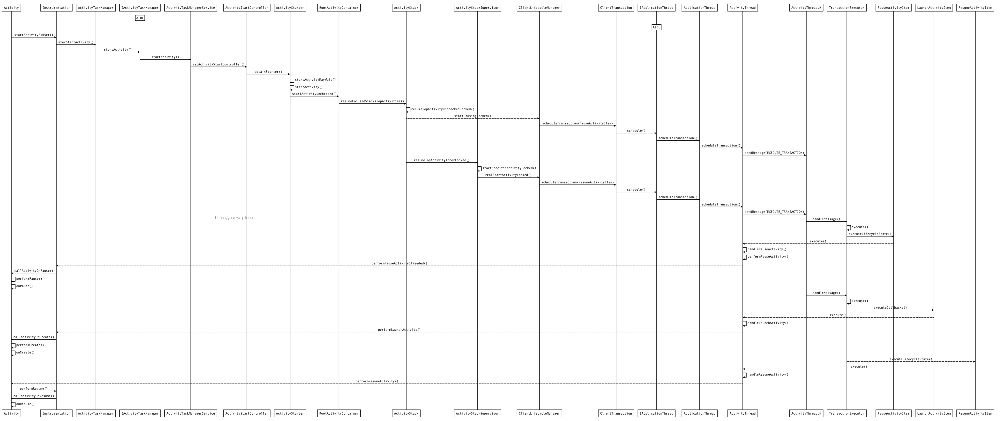
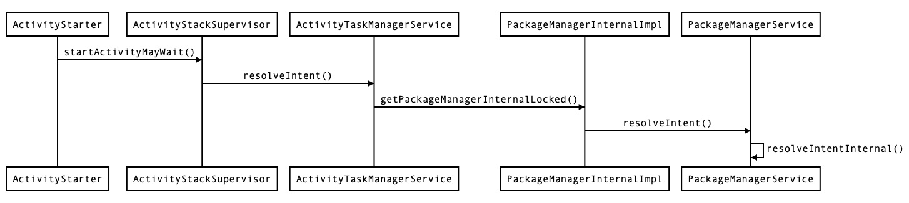
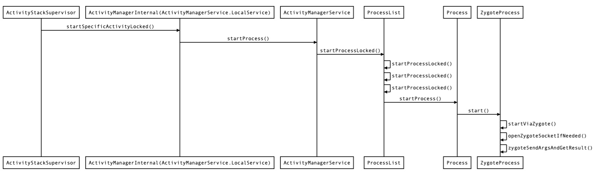
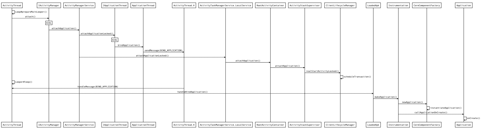

源码基于 Android 10

大图
{kind=link}
此图着重提炼了生命周期的部分，Android 10 中 新增了 ActivityTaskManager ，专门用于管理 Activity，接替了 ActivityManager 的一部分工作
理解 Instrumentation
Activity 首先会通过 Instrumentation 去调用，Instrumentation 中包含 callActivityOnCreate、callActivityOnPause、callApplicationOnCreate 等调用，具有强大的跟踪 Activity 及 Application 生命周期的功能，所以也被作为应用测试框架中的基类使用。一个进程有一个 ActivityThread 对象，ActivityThread 对象持有一个 Instrumentation 对象，每个 Activity 都持有 Instrumentation
IPC 发生在何处？
在 Instrumentation 中通过 IActivityTaskManager.aidl 接口由 App 进程进入到 system_server 进程；在 ClientTransaction 中通过 IApplicationThread.aidl 接口由 system_server 回到 App 进程
Activity 栈是如何管理的？
ActivityRecord：Activity 以 ActivityRecord 形式记录，一个 ActivityRecord 对应一个 Activity 实例
TaskRecord：这个才是一个真正的 Activity 栈，内部持有 ArrayList< ActivityRecord >，记录当前栈中所有的 Activity
ActivityStack：负责管理 Activity 栈，存放了多个 TaskRecord
何处读取 manifest 中 Activity 节点的启动模式等配置

如图通过 PackageManagerService#resolveIntentInternal 方法返回 ResolveInfo ，ResolveInfo 包括 ActivityInfo、ServiceInfo、ProviderInfo 等信息，此调用已经处于 system_server 进程了，所以并不是 IPC，PackageManagerService 主要负责解析 AndroidManifest.xml、扫描本地 apk 目录、管理 App 安装删除等
何处检测 Activity 是否在 manifest 注册？
关键代码在 ActivityStarter#startActivity 方法中：1
2
3
4
5if (err == ActivityManager.START_SUCCESS && aInfo == null) {
// We couldn't find the specific class specified in the Intent.
// Also the end of the line.
err = ActivityManager.START_CLASS_NOT_FOUND;
}
aInfo 就是 ActivityInfo ，而 ActivityInfo 为空导致后续报错返回。那 aInfo 是从哪来的呢？当然就是通过 PackageManagerService#resolveIntentInternal 方法解析出来的。然后在 Instrumentation#checkStartActivityResult 方法中检测到 ActivityManager.START_CLASS_NOT_FOUND 返回值后，就抛出 “Unable to find explicit activity class {xxx}; have you declared this activity in your AndroidManifest.xml? “异常了
为什么单独配置 taskAffinity 不会生效
关键代码在 ActivityStarter#startActivityUnchecked 方法中：1
2
3
4
5
6
7
8
9
10
11if (mStartActivity.resultTo == null && mInTask == null && !mAddingToTask
&& (mLaunchFlags & FLAG_ACTIVITY_NEW_TASK) != 0) {
newTask = true;
result = setTaskFromReuseOrCreateNewTask(taskToAffiliate);
} else if (mSourceRecord != null) {
result = setTaskFromSourceRecord();
} else if (mInTask != null) {
result = setTaskFromInTask();
} else {
result = setTaskToCurrentTopOrCreateNewTask();
}
只有 mLaunchFlags 标记为 FLAG_ACTIVITY_NEW_TASK 才会去创建一个新的 Activity 栈即 TaskRecord，而系统并没有对单独配置一个 taskAffinity 的情况做处理。那在 AndroidManifest.xml 中配置的 launchMode 是在何处处理，并反应到 mLaunchFlags 中的呢？
ActivityStarter#startActivityUnchecked 方法中调用了 ActivityStarter#computeLaunchingTaskFlags 方法，该方法中配置 mLaunchFlags 的代码如下：1
2
3
4
5
6
7
8
9if ((mLaunchFlags & FLAG_ACTIVITY_NEW_TASK) == 0 && mInTask == null) {
Slog.w(TAG, "startActivity called from non-Activity context; forcing " +
"Intent.FLAG_ACTIVITY_NEW_TASK for: " + mIntent);
mLaunchFlags |= FLAG_ACTIVITY_NEW_TASK;
}else if (mSourceRecord.launchMode == LAUNCH_SINGLE_INSTANCE) {
mLaunchFlags |= FLAG_ACTIVITY_NEW_TASK;
} else if (isLaunchModeOneOf(LAUNCH_SINGLE_INSTANCE, LAUNCH_SINGLE_TASK)) {
mLaunchFlags |= FLAG_ACTIVITY_NEW_TASK;
}
可以看到 LAUNCH_SINGLE_INSTANCE 模式会在一个新的栈中启动等我们早已熟知的规则
理解 ClientTransactionItem 与 ActivityLifecycleItem
ClientLifecycleManager 可以将一或多个生命周期事件组合到一起作为一个事务即 ClientTransaction 来执行，startActivity 时新 Activity 的 onCreate、onStart、onResume 事件就是存放在一个事务中被执行的
startActivity 时新 Activity 的 onCreate 事件存放在 ClientTransaction 的 List < ClientTransactionItem > 类型的成员变量中，载体为 LaunchActivityItem。 LaunchActivityItem 也是 ClientTransactionItem 的子类，即启动 Activity 事件。另外还有 NewIntentItem（触发 onNewIntent 回调）、ActivityResultItem（触发 onActivityResult）、ConfigurationChangeItem（触发 onConfigurationChanged 回调）等事件
startActivity 时新 Activity 的 onResume 事件存放在 ClientTransaction 的 ActivityLifecycleItem 类型的变量成员变量中，这个变量也表示最终的生命周期状态，载体为 ResumeActivityItem。ActivityLifecycleItem 也是 ClientTransactionItem 的一个子类
为什么不能在 Activity 的 onPause 方法中做耗时操作？
ClientTransaction 为 Parcelable 数据，会通过 IApplicationThread.aidl 的 scheduleTransaction 方法发送到 App 端，然后加入到主线程 ActivityThread.H 消息队列中等待执行。startActivity 时会依次发送前一个 Activity 的 pause 和新 Activity 的 resume 事务，然后这两个事务会通过 ActivityThread.H 依次执行，所以不能在 Activity 的 onPause 方法中做耗时操作，因为只有 onPause 方法执行完后，下一个 Activity 的生命周期事件才能被执行，否则会阻塞新界面显示
activity 实例在何处创建？
在 ActivityThread#performLaunchActivity 方法中，会通过 Instrumentation#newActivity 方法创建 Activity 的实例对象，随后就调用了 Instrumentation#callActivityOnCreate 方法回调 Activity 的 onCreate 方法
Launcher 中点击图标启动 App
Launcher 中点击图标启动同样是调用 startActivity 方法，但需要创建进程，关键代码在 ActivityStackSupervisor#startSpecificActivityLocked 方法中：
1 | final WindowProcessController wpc = |

与 zygote 进程通信采取了 Socket 方式，为什么不使用更安全、数据只需拷贝一次的 binder 呢？zygote 作为 Android 的受精卵进程，通过 fork 方法创建进程，而 fork 是不允许多线程的，否则会因为 Copy-on-Write 机制导致死锁，而 binder 正是基于多线程运行的
在 ProcessList#startProcessLocked 方法中，传入了值为 “android.app.ActivityThread” 的 entryPoint 参数，后续会透传给 zygote 进程，zygote fork 新进程成功后，新进程的 ActivityThread#main 函数会被调用，即 App 真正的启动入口

大图
{kind=link}
在 ActivityManagerService#attachApplicationLocked 方法中执行了两个关键逻辑，一是通过 IApplicationThread 回到 App 进程中创建 Application 实例并回调 onCreate 方法；二是调用 ActivityTaskManagerService#attachApplication 方法，进一步去启动首页 Activity 。
启动 Activity 和普通的 startActivity 一样，都会调用到 ActivityStackSupervisor#realStartActivityLocked 方法
理解 ActivityThread 与 ApplicationThread
ActivityThread.main() 方法是程序的启动入口，初始化了主线程 Looper，在 ActivityThread.H 中处理消息。ApplicationThread 是 ActivityThread 的内部类，实现了 IApplicationThread.aidl 接口以接受 AMS 等系统服务的回调，而大多数都是四大组件相关的任务，所以发送 Handler 消息到 ActivityThread.H ，即从 binder 线程切换到主线程中处理
如何启动一个未在 manifest 中注册的 Activity ？
加载 manifest 信息及检测注册在 system_server 进程，即无法干扰检测逻辑。常见做法是在 manifest 中注册一个占位 Activity，在进入 system_server 进程之前把未注册的 Activity 修改为占位 Activity，然后等从 system_server 返回到 App 进程后再修改回未注册的 Activity，然后去创建、启动，也就是说需 hook 两处：
hook ActivityTaskManager：1
2
3
4
5
6
7
8
9
10
11
12
13
14
15
16
17
18
19
20
21
22
23
24
25
26
27
28
29
30
31
32
33
34
35
36
37
38
39final Field singletonField = ActivityTaskManager.class
.getDeclaredField("IActivityTaskManagerSingleton");
singletonField.setAccessible(true);
Singleton singleton = (Singleton) singletonField.get(null);
final Object activityTaskManagerObject = singleton.get();
final Field mInstanceField = Singleton.class.getDeclaredField("mInstance");
mInstanceField.setAccessible(true);
Object value = Proxy.newProxyInstance(ActivityTaskManager.class.getClassLoader()
, new Class[]{Class.forName("android.app.IActivityTaskManager")}
, new InvocationHandler() {
public Object invoke(Object proxy,
Method method, Object[] args) throws Throwable {
if ("startActivity".equals(method.getName())) {
Intent raw;
int index = 0;
for (int i = 0; i < args.length; i++) {
if (args[i] instanceof Intent) {
index = i;
break;
}
}
if (!(args[index] instanceof Intent)) throw new AssertionError();
raw = (Intent) args[index];
if (raw.getComponent().getClassName()
.equals("com.yinghao.test.UnRegisterActivity")) {
ntent newIntent = new Intent();
//将未注册的 UnRegisterActivity 替换为占位 FakeActivity
newIntent.setComponent(new ComponentName("com.yinghao.test",
FakeActivity.class.getName()));
//记录 UnRegisterActivity
newIntent.putExtra(EXTRA_TARGET_INTENT, raw);
args[index] = newIntent;
}
}
return method.invoke(activityTaskManagerObject, args);
}
});
mInstanceField.set(singleton, value);
hook ActivityThread：1
2
3
4
5
6
7
8
9
10
11
12
13
14
15
16
17
18
19
20
21
22
23
24
25
26
27
28
29
30
31
32
33
34
35
36
37
38
39
40
41
42
43
44
45ActivityThread activityThread = ActivityThread.currentActivityThread();
Field mH1 = activityThread.getClass().getDeclaredField("mH");
mH1.setAccessible(true);
final Handler mH = (Handler) mH1.get(activityThread);
Field mCallBackField = Handler.class.getDeclaredField("mCallback");
mCallBackField.setAccessible(true);
mCallBackField.set(mH, new Handler.Callback() {
public boolean handleMessage(Message msg) {
try {
if (msg.what == 159) { // ActivityThread.H.EXECUTE_TRANSACTION
final ClientTransaction transaction = (ClientTransaction) msg.obj;
Field mActivityCallbacksField = transaction
.getClass().getDeclaredField("mActivityCallbacks");
mActivityCallbacksField.setAccessible(true);
List<ClientTransactionItem> clientTransactionItems =
(List<ClientTransactionItem>) mActivityCallbacksField.get(transaction);
if (clientTransactionItems != null) {
for (ClientTransactionItem c : clientTransactionItems) {
if (c instanceof LaunchActivityItem) {
//修正 Activity 启动事件实体 LaunchActivityItem
LaunchActivityItem item = (LaunchActivityItem) c;
Field intentField = item.getClass().getDeclaredField("mIntent");
intentField.setAccessible(true);
Intent intent = (Intent) intentField.get(item);
Field mInfoField = item.getClass().getDeclaredField("mInfo");
mInfoField.setAccessible(true);
ActivityInfo aInfo = (ActivityInfo) mInfoField.get(item);
Intent realIntent = intent.getParcelableExtra(EXTRA_TARGET_INTENT);
if (realIntent != null) {
//将占位 FakeActivity 改回未注册的 UnRegisterActivity
intent.setComponent(realIntent.getComponent());
aInfo.packageName = realIntent.getComponent().getPackageName();
aInfo.name = realIntent.getComponent().getClassName();
}
}
}
}
}
} catch (Exception e) {
}
return false; //返回 false 正好可以让 ActivityThread 继续处理
}
});
实现启动未注册 Activity 的前提必然是已掌握 startActivity 流程，这也是插件化的入门，实际应用需要去兼容各个 Android 版本
最后
带着问题去分析、学习源码，自然的就会聚焦出一条主线